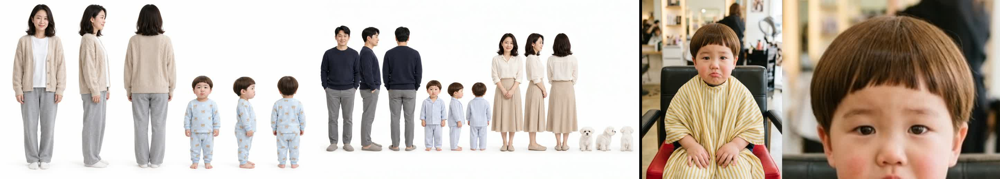
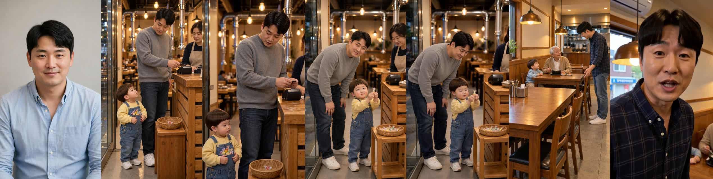
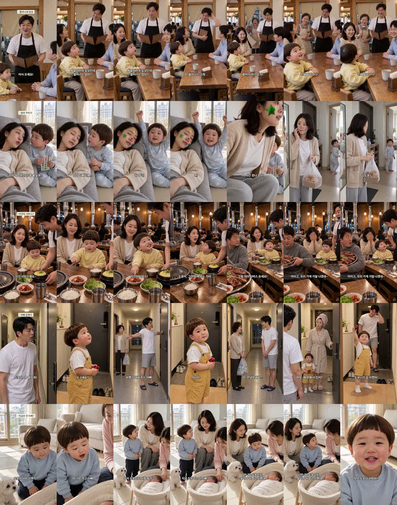
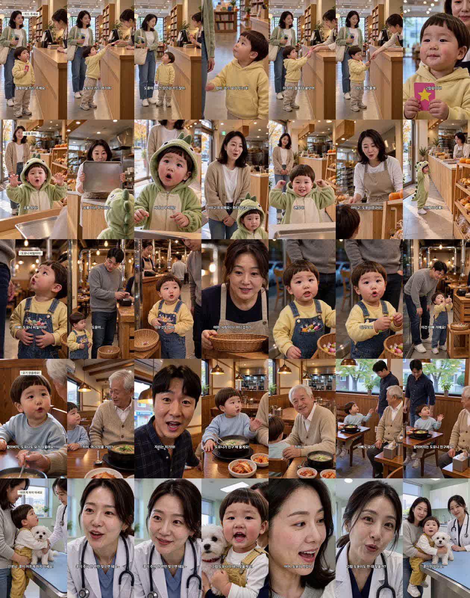

도윤이 4~5살처럼 · 아빠 다른 사람 · 연기 어색 — 원인
세 증상의 뿌리는 하나입니다. 10-17~10-21 사이에 H3 에 넣는 참조 그림과 지시문 틀이 바뀌었습니다.
- 예전(터진 편 시절): 편마다 인물 시트 — 엄마·아빠·도윤·콩이 전신을 한 줄로, 앞·옆·뒤.
- 지금: 도윤이 사진 한 장(미용실 편 상반신 → 오늘부터 얼굴만). 아빠·엄마는 H3 에 안 들어감.
- 지시문에서 «자연스럽게 연기» · «24개월» 줄이 0컷으로 빠지고, «카메라 고정» · «듣는 사람은 입만 닫음»이 들어감.
① H3 에 들어간 인물 참조 — 예전 vs 지금

왼쪽 두 장 = 예전 인물 시트(낮잠 꾸미기 · 비밀 둘). 도윤이가 어른 허리 높이 → 아기 몸 비율 기준이 있음. 오른쪽 두 장 = 지금(미용실 정본 · 오늘 얼굴만 자른 판) → 몸·키 기준 없음, 아빠 없음. 옆으로 밀어서 보세요.
② 지시문 문구 실측 (허브 H3 지시문 전수)
| 문구 | 예전 64컷 | 지금 126컷 |
|---|---|---|
| Everyone moves naturally like real actors | 48 | 0 |
| ReelShort/DramaBox … relaxed real-time acting | 48 | 0 |
| 24-month-old (도윤 나이) | 52 | 0 |
| camera is locked off · one continuous take | 0 | 115 |
| Meanwhile Doyoon keeps his lips closed (듣는 사람) | 1 | 63 |
③ 아빠 — 정본은 키프레임까지만 간다

왼쪽부터 아빠 정본 → 사탕 2컷 키프레임 → 영상 → 사탕 6컷 키프레임 → 영상 → 국밥집 3컷 키프레임(아빠가 작게) → 영상(H3 가 클로즈업으로 당기며 얼굴을 새로 만듦).
④ 편별 도윤이 — 시간순

위에서부터 할머니 밥상(10-06) · 엄마 꾸미기(10-11) · 서비스(10-09) · 아빠 갇힘(10-13) · 동생 질투(10-17). 여러 사람이 한 화면에서 서로 반응.

위에서부터 서점(10-21) · 공룡(10-22) · 사탕 · 국밥집 · 동물병원. 한 컷 한 사람 클로즈업이 늘고, 어른이 렌즈를 보고 말함.
조회수와의 관계 (확정 아님)
10-18·10-19 공개 4편은 옛 인물 시트 방식이었는데도 안 터졌습니다 → 이 전환이 조회수 하락의 유일한 원인은 아닙니다(소재 쏠림 가설 유지). 10-20 이후 편은 이 전환까지 겹쳤습니다.
고칠 방향 (제안)
- H3 인물 참조를 편마다 인물 시트(그 편 등장인물 전원 전신 · 그 편 옷)로 되돌림.
- 지시문 틀에 «24-month-old» · «다들 배우처럼 자연스럽게» · 장르·연기 줄을 되살리고, 듣는 사람에게 할 일을 적음.
- 먼저 시험: 국밥집 3컷(아빠)·사탕 2컷을 옛 방식으로 다시 뽑아 나란히 비교 (컷당 약 $0.07).